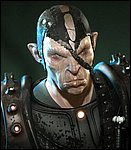

Forums galactiques > Taverne galactique : lieu de discussion informel > la fête des Bisous
Pages : 1 2
| Gros Bisous Réputation à la taverne : 214  05/08 ETU 15:11 | Score : 0 Détails COUUUUUCOUUUUU MES PTIT LOULOUUUUUUUU, REVEILLEZ VOUS, BOUGEZ VOUS CAR CE SOIR, C'EST LA FÊTE DES BISOUUUUUUUUUUUUUUUUUUUUUUUUUUUUUUUUUUUUUUUUUS !!!!!!!!!!
DES BISOUUS PARTOUUUUUUUUUUUUUUUUUUUUUT HOUHOUUUUUUUUUUUUUUUUUU HOUHOUUUUUUUUUUUUUUUUUUUUUUU SUR LE NEZ DANS LE COUUUUUUUUUUUUUUUUUUUUUUUU HOUHOUUUUUUUUUUU HOUHOUUUUUUUUUUUUUUUUUUUU DES BISOUS DES BISOUS, DES MILIEEEEEERS DE BISOUUUUUUUUUS, ET ENCORE DES BISOUUUUUUS HOUUUUUUHOUHOUUUUUUUUUUUUUUUUUU!!! Aaaaaalors mes ptit boud'chou ?? comment allez vous ? vous étes pret a donner des bisous. Amis, ennemis, venez tous à l'apero-bisous !!, au menu, des bisous rose, bleu, arc en ciel, des bisous de couleur, tout en coeur, rien que pour votre bonheur. Car le bonheur et les bisous, j'en suis fou fou fou, et vous ? Speciale dédicace a tous mes amis de la galaxie, a toi mon ptit lokki comme a toi mon ptit jafounet, toto, valolo, tous ces ptit cocos, venez tous à l'apero, soirée speciale bisous ce soir alors n'hesitez pas a en distribuer a tout le monde. des bisous partouut houhouuuuuu houhouuu sur le nez dans le couuu houhouuuu... | ||
| Gros Secret Réputation à la taverne : 11  05/08 ETU 15:14 | Score : 0 Détails OUUUUUUUUUUUUUUUUUUUUUé des bisous!!
Vla une taverne pour moi on dirais Un sac de bisous et une grenadine!!! Siteplait. | ||
| Gros Bisous Réputation à la taverne : 214 05/08 ETU 15:16 | Score : 0 Détails ca marche Miss Bisounours ^^, avec ca en prime 3 special BBBB pour toa ^^.
Allez mes boud'chou festoyez en coeur, pour ce spectacle de bonheur | ||
| GrosFarceur Réputation à la taverne : 41  05/08 ETU 15:22 | Score : 0 Détails La fête venait à peine de démarrer, que GrosFarceur, du haut de son petit nage blanc arriva.
Après avoir commandé des centaines de bisous au barman, GrosFarceur commenca à piégier diverses boissons, sièges, ainsi que les toilettes. C'est ainsi que Gros Bisous, après avoir commandé un siro de grenadine, devint tout d'abord bleu, avant finalement de se transformer temporairement en mouton de couleur rouge... GrosFarceur, tout heureux de son coup, parti prendre un verre de siro à la menthe. | ||
| Gros Bisous Réputation à la taverne : 214 05/08 ETU 15:45 | Score : 0 Détails Gros Bisous, l'ame charitable, vi en son ame et conscience que la violence n'était pas de mise chez les bisounours.
"Gros farceur est un gaffeur sans foi ni loi, et tapageur il prend son pied et sans torpeur gaffes aux farces de Gros Farceur Moi gros bisous bisous tout fou subit ses farces du tout au tout mais pour se venger gros bisous prive de bisous ce ptit boud'chou" | ||
| Gros Secret Réputation à la taverne : 11 05/08 ETU 15:48 | Score : 0 Détails Hé Hé
Bisous tout doux,------------- -------------Bisous tout mous, ---Bisous tout partout,------- Bisous dans le coup,--------- ------------Bisou sur la joue -------Bisous chou------------ Bisous fous fous,------------- | ||
| Gros Veinard Réputation à la taverne : 316  05/08 ETU 16:06 | Score : 0 Détails Hey, Une méga teuf avec tout plein de bisous pour la Bisounours et qu'elle est chouuuuuuuuuuuu, allez, un p'tit bisou et un gros poutou pour la Miss boutchou
| ||
| GrosChéri Réputation à la taverne : 36  05/08 ETU 16:16 | Score : 0 Détails Des bisous, des bisous, des bisous et encore des bisous
| ||
| Gros Secret Réputation à la taverne : 11 05/08 ETU 16:19 | Score : 0 Détails Merchi Bou'D'Chou ^^ Bonne fete a vous
| ||
| Volkow Réputation à la taverne : 15  05/08 ETU 23:41 | Score : 0 Détails La porte de la salle s'ouvrit et Volkow apparut...
Heu...J'ai dû me tromper de salle.Enfin remarque j'aurais dû m'en douter vu qu'il y avait marqué Gay Prime à l'entrée...Et mince...Bon, je repars... Puis POUF Volkow disparut aussitôt dans un nuage de fumée... P.S HRP:je tien à dire que je n'ais rien contre les homosexuels, bien que je sois 100% hétérosexuel. C'est juste pour charrier un peu mes amis les ours roses, bleux, violets, rouges qui mettent un peu d'ambiance dans ce bas monde... | ||
| Herlock Réputation à la taverne : 1  05/08 ETU 23:58 | Score : 0 Détails Ya que des nounours ici. Je vais vous laisser entre vous.
| ||
| Gros Veinard Réputation à la taverne : 316 06/08 ETU 00:02 | Score : 0 Détails Volkow... T'AS OUBLIE LE BISOUNOURS VERT !!!!!!!!!!!!
| ||
| GrosSecret Réputation à la taverne : 71  06/08 ETU 10:31  | Score : 0 Détails Arf c'est bon on prend aussi le non bisounours à cette fète simplement eux il payent leurs consomations ^^
| ||
| luffy Réputation à la taverne : -20  06/08 ETU 10:46 | Score : 0 Détails Mais ... c'est pas juste il est ou le bisounours boss?
je veut le voir et je l'exige ^^ | ||
| GrosSecret Réputation à la taverne : 71 06/08 ETU 10:50 | Score : 0 Détails Nan po le patron!!!! Ok ok gratuit pour luffy...
| ||
| Jean Réputation à la taverne : -14 06/08 ETU 13:30 | Score : 0 Détails Et pour moi aussi sinon O tien vous ête le boss bisounours? (voix fluète du chef bisounours)Oui pourquoi?
| ||
| GrosSecret Réputation à la taverne : 71 06/08 ETU 14:07 | Score : 0 Détails Nan ok gratuit pour tout le monde qu'est ce qu'il faut pas faire pour etre un gentil bisounours pffffff
| ||
| Volkow Réputation à la taverne : 15 06/08 ETU 23:56 | Score : 0 Détails Ah bah si c'est gratuit ça va...Ah ba tout t'à coups c'est plus un gay prime c'est une fête normale...
J'arrive!!!!! Et désolé au Bisounours vert... | ||
| Grosritale Réputation à la taverne : 0  07/08 ETU 11:48 | Score : 0 Détails bonjour a tous je suis nouveau est je dercouvre avec plaisir qu'il y a d'autre bisousnour je suis content tourner generale de bonbon.
| ||
| RoX Réputation à la taverne : 20  08/08 ETU 20:19 | Score : 0 Détails GrosRitale ... connaisant quelque bisounours ... et surtout leur aspect d'ours en peluche multicolor ... votre faciesse ne correspond pas au critére du Bisounours Standard ... enfin bon ce n'est pas a moi d'en juger
Par contre c'est pas de refus pour un Bisous *tend la joue* |
Pages : 1 2
Forums galactiques > Taverne galactique : lieu de discussion informel > la fête des Bisous